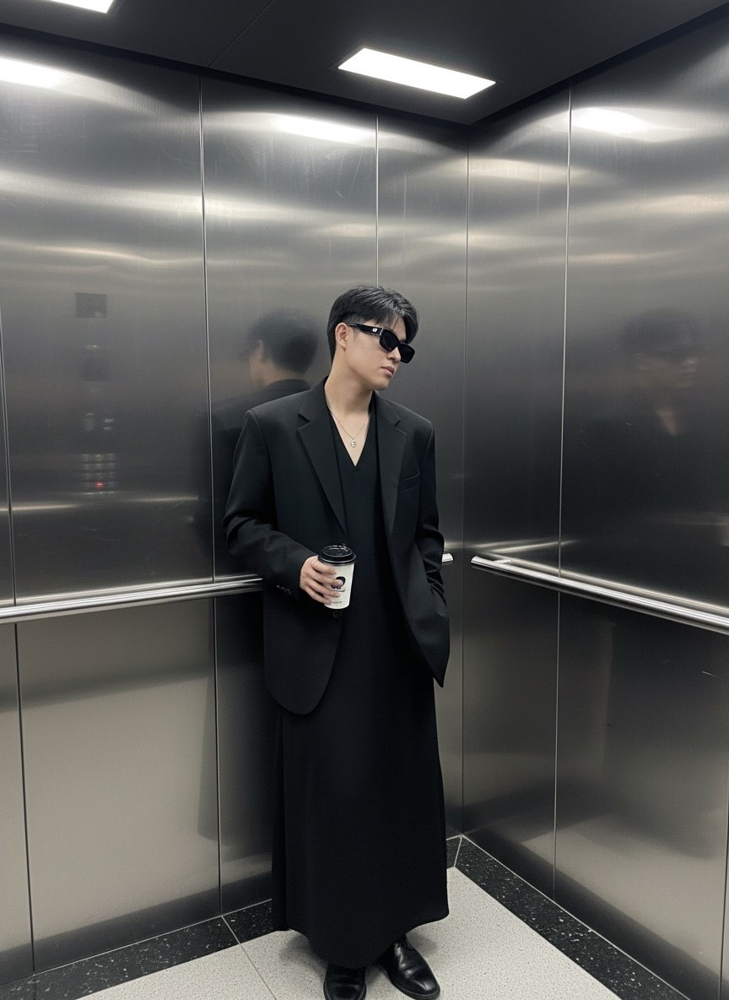

PERFORMANCE / 01
Canon in D
Một bài hát nổi bật với giai điệu khiến bạn liên tưởng đến lễ đường.
THE ART OF MUSIC
Chào mừng đến với không gian âm nhạc của Huy Thiên, nơi kể chuyện bằng những giai điệu Piano.
Music is the language of the soul


01 / VỀ MÌNH
Chào bạn, mình là Huy Thiên. Ban ngày, mình là một sinh viên của Trường Đại học Sư phạm TP.HCM với những giây phút bận rộn trong lớp học. Nhưng khi mọi ồn ào trong ngày khép lại, nơi duy nhất mình cảm thấy trọn vẹn nhất là bên cạnh những phím đàn.
Lần đầu ngón tay chạm vào phím đàn Piano là năm lên sáu tuổi, khi chân còn chưa với tới bàn đạp của đàn. Đi qua ngần ấy năm, cây đàn không chỉ là sở thích, mà là nơi cất giữ những vui buồn không biết tỏ cùng ai. Mình chơi đàn không phải để biểu diễn, mà để chia sẻ những tâm tư, tình cảm bên trong mình. Hy vọng những giai điệu ở đây có thể chạm vào một góc bình yên nào đó bên trong bạn.
Mỗi phím đàn, một câu chuyện. Mỗi giai điệu, một cảm xúc.
02 / GIAI ĐIỆU YÊU THÍCH
Chọn một phong cách để khám phá danh sách những bản nhạc mình yêu thích.
03 / TÁC PHẨM
Một bài hát nổi bật với giai điệu khiến bạn liên tưởng đến lễ đường.
Một bài hát tình yêu ngọt ngào.
Một giai điệu piano nhẹ nhàng và đầy cảm xúc.
Ngoài piano, mình cũng biết chơi một chút guitar.
04 / TRẢI NGHIỆM
05 / KẾT NỐI
Cảm ơn bạn đã ghé thăm không gian nhỏ này.